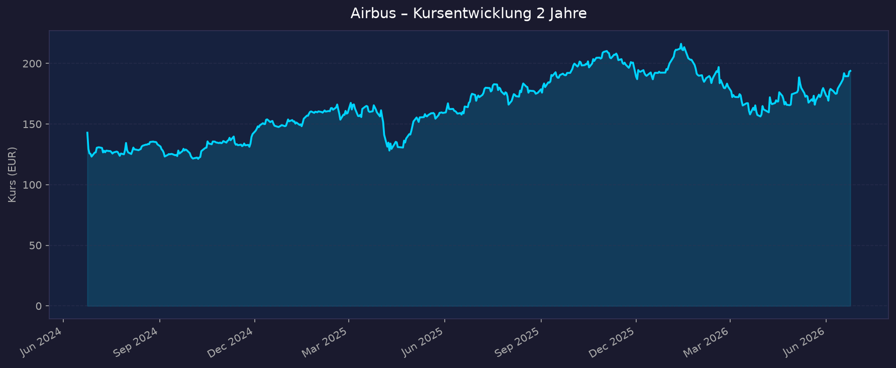
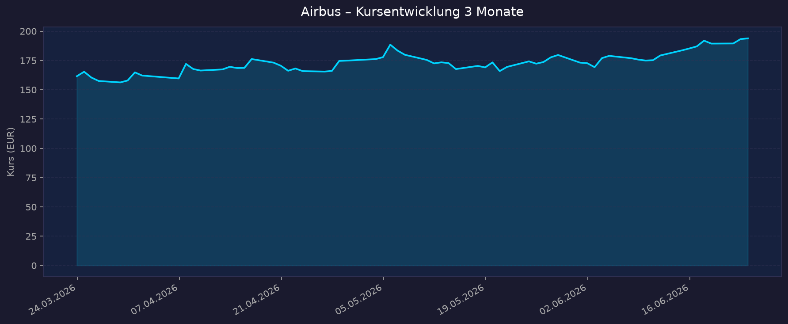

Indirekter Weltraum-Play. Airbus ist primär ein Luftfahrt- und Verteidigungskonzern. Der Weltraum-Bezug läuft über das Segment Airbus Defence and Space (Satelliten, Erdbeobachtung/Pléiades Neo, militärische SatCom) und über ArianeGroup (Joint Venture mit Safran, baut die Trägerrakete Ariane 6). Anders als reine Pure-Plays (Rocket Lab, AST SpaceMobile) ist Airbus hochprofitabel und dividendenstark — volle KGV- und Dividenden-Analyse ist möglich. Notierung in EUR an der Euronext Paris.
📈 1. Kursentwicklung
Aktueller Kurs: 193,86 EUR | Veränderung heute: ca. ±0 % (Vortagsbereich ~188–194 EUR)
Chart – 2 Jahre

Chart – 3 Monate

| Zeitraum | Kurs Start | Kurs Ende | Veränderung |
|---|---|---|---|
| 2 Jahre | 142,87 EUR | 193,86 EUR | +35,7 % |
| 3 Monate | 161,57 EUR | 193,86 EUR | +20,0 % |
| 52-Wochen-Hoch | — | 216,20 EUR | — |
| 52-Wochen-Tief | — | 156,29 EUR | — |
Einordnung: Solider Aufwärtstrend über 2 Jahre (+35,7 %). Nach einem Rücksetzer auf das 52-Wochen-Tief (~156 EUR) hat sich die Aktie in den letzten 3 Monaten kräftig erholt (+20 %). Das Allzeithoch lag Anfang 2026 oberhalb des aktuellen Kurses (52-Wochen-Hoch 216,20 EUR), der aktuelle Kurs liegt rund 10 % darunter. Interaktiv: TradingView AIR (Euronext Paris)
💹 2. KGV-Entwicklung (Kurs-Gewinn-Verhältnis)
Aktuelles KGV: ~28–30 (trailing); forward ~22
Die Quellen streuen: stockanalysis.com nennt trailing P/E 26,5 / forward 22,2, eulerpool ~28, finanzen.net ~30. companiesmarketcap.com weist einen TTM-Wert von 60,2 aus — dieser Ausreißer beruht vermutlich auf einer ADR-/Stichtagsverzerrung (schwaches Q1 2026 in der TTM-Basis) und wird hier nicht als Leitwert verwendet. Plausibler Korridor: 26–30.
| Zeitraum | KGV | Einordnung |
|---|---|---|
| Aktuell (trailing) | ~26–30 | Über dem 10-Jahres-Schnitt (~25,5), leicht teuer |
| forward (2026e) | ~22 | Günstiger, da Gewinnerholung erwartet |
| 10-Jahres-Schnitt | ~25,5 | Referenz |
| Jahr 2024 | ~28 | — |
| Jahr 2023 | ~28 | — |
| Jahr 2022 | ~20 | Günstigste Phase im Vergleich |
Bewertung: Mit einem trailing KGV von ~26–30 liegt Airbus leicht über dem eigenen historischen Schnitt (~25,5) — die Aktie ist moderat ambitioniert bewertet, aber nicht extrem. Das forward-KGV von ~22 signalisiert, dass der Markt für 2026/27 eine Gewinnerholung einpreist (FY-Guidance EBIT adjusted ~7,5 Mrd EUR). Eulerpool stuft den Kurs als rund 11 % über dem fairen Wert ein.
💰 3. Sales Multiple (Kurs-Umsatz-Verhältnis / P/S)
Aktuelles P/S-Verhältnis: ~2,0–2,1
| Zeitraum | P/S Ratio | Einordnung |
|---|---|---|
| Aktuell | ~2,0–2,1 | Marktkap. ~149–153 Mrd EUR / Umsatz 73,4 Mrd EUR (FY2025) |
| EV/EBITDA aktuell | ~16,0 (Euronext-Basis) | Unter Branchenmedian (~23,8) → relativ günstig |
| vor 12 Monaten | ~1,8 (geschätzt) | leicht niedriger |
| vor 24 Monaten | ~1,6 (geschätzt) | niedriger |
Trend: Steigend. Das P/S hat sich mit dem Kursanstieg von ~1,6 (2024) auf ~2,0 (2026) ausgeweitet. Für einen margenstarken Industriekonzern ist ein P/S von ~2 normal und nicht überzogen. Das EV/EBITDA von ~16 liegt deutlich unter dem Branchenmedian der Aerospace-&-Defense-Industrie (~23,8) — auf EBITDA-Basis ist Airbus relativ günstig bewertet. Hinweis: Die jährlichen historischen P/S-Werte (Macrotrends) waren nicht frei abrufbar (HTTP 402) und sind oben aus Marktkap./Umsatz geschätzt.
📊 4. Handelsvolumen (Trading Volume)
| Zeitraum | Ø Tagesvolumen | Auffälligkeiten |
|---|---|---|
| 3-Monats-Durchschnitt | ~1,38 Mio Aktien | leicht über dem 2-Jahres-Schnitt |
| 2-Jahres-Durchschnitt | ~1,18 Mio Aktien | Referenz |
| Volumen-Peaks | erhöht um Quartalszahlen | v. a. um FY-2025-Zahlen (Feb 2026) und Q1-2026-Zahlen (28.04.2026) |
Volumentrend: Das Handelsvolumen liegt in den letzten 3 Monaten (~1,38 Mio/Tag) leicht über dem 2-Jahres-Schnitt (~1,18 Mio/Tag) — moderat zunehmendes Interesse, passend zur Kurserholung. Volumenspitzen treten erwartungsgemäß rund um Earnings-Termine auf (Werte gemessen auf AIR.PA via yfinance).
🏦 5. Insider Trades (letzte 2 Jahre)
| Datum | Name | Funktion | Kauf/Verkauf | Anzahl Aktien | Wert (EUR) |
|---|---|---|---|---|---|
| ~2026 (90 Tage) | Mhun P. | Insider | Verkauf | 2.420 | ~452.685 € |
| ~2026 (90 Tage) | Harrison J. | Insider | Verkauf | 2.350 | ~407.866 € |
3-Monats-Überblick: In den letzten ~90 Tagen wurden zwei meldepflichtige Insider-Transaktionen erfasst — beide Verkäufe (zusammen ~860.000 EUR). Volumen ist gemessen am Konzern-Streubesitz sehr gering und typisch für Ausübung/Vesting von Aktienvergütungen, kein belastbares Stimmungssignal. 2-Jahres-Überblick: Keine größeren auffälligen Insider-Käufe dokumentiert. Parallel läuft ein Aktienrückkaufprogramm des Unternehmens selbst (AGM-Ermächtigung 15.04.2025 für bis zu 10 % des Kapitals; zweite Tranche bis zu 2,07 Mio Aktien, Nov 2025 – Jan 2026) — primär zur Bedienung von Mitarbeiter-Aktienprogrammen.
Quelle: insiderscreener.com / Yahoo Finance (AIR.PA Insider Transactions)
🩳 6. Short-Positionen
Aktuelle Short Quote: ~0,01 % des Streubesitzes (Float) — sehr niedrig
| Zeitraum | Short Interest | Veränderung |
|---|---|---|
| 29.05.2026 | 298.887 Aktien (~0,01 % Float) | +89,5 % ggü. Vorperiode (absolut, von sehr niedrigem Niveau) |
| 15.05.2026 | ~158.000 Aktien | — |
Einschätzung: Sehr niedrig. Mit ~0,01 % des Float (Datenbasis EADSY-ADR via MarketBeat) gibt es praktisch keine relevante Short-Spekulation gegen Airbus. Der prozentuale Sprung (+89,5 %) klingt dramatisch, ist aber Ausdruck einer Verdopplung von einem winzigen Absolutniveau (~158 Tsd. auf ~299 Tsd. Aktien) und ohne Aussagekraft. Der Markt setzt klar nicht auf fallende Kurse.
🗞️ 7. Aktuelle Nachrichten
| Datum | Quelle | Nachricht | Relevanz |
|---|---|---|---|
| 28.04.2026 | CNBC / Reuters | Q1 2026: Nettogewinn halbiert (-52 %), Umsatz -7 % auf 12,7 Mrd EUR, nur 114 Auslieferungen | Hoch |
| 28.04.2026 | Aerotime | A320-Hochlauf gebremst — Triebwerksmangel (Pratt & Whitney) belastet | Hoch |
| Q1 2026 | Airbus IR | Auftragseingang stark: 408 brutto / 398 netto Flugzeugbestellungen; Defence-&-Space-Order +92 % auf 5,0 Mrd EUR | Hoch |
| 23.10.2025 | SpaceNews / Airbus | Project Bromo: MoU mit Thales & Leonardo zur Bündelung der Raumfahrt (neue Einheit, 6,5 Mrd EUR Umsatz, Start 2027, Airbus 35 %) | Hoch |
| 11.03.2026 | Arianespace | ArianeGroup/Airbus DS: neuer Liefervertrag Ariane 6 (27 Shipsets, Carbon-Strukturen) | Mittel |
| Jan 2026 | Airbus | Erster Pléiades-Neo-Next-Erdbeobachtungssatellit: Start Anfang 2028 aus Kourou | Mittel |
| 19.02.2026 | CNBC | FY-2025-Zahlen + Guidance 2026: 870 Auslieferungen Ziel; Wettbewerb mit Boeing verschärft sich | Hoch |
| 01.04.2026 | Goldman Sachs | Airbus von der European Conviction List gestrichen | Mittel |
| 27.04.2026 | RBC Capital | Buy bestätigt, Kursziel 200 EUR | Mittel |
| 2026 | MarketScreener (22 Analysten) | Konsens: Outperform, Ø-Kursziel 216,66 EUR | Hoch |
Sentiment: Überwiegend neutral bis positiv. Belastend wirken der schwache Q1-2026-Gewinneinbruch und die Lieferketten-/Triebwerksengpässe (Pratt & Whitney). Stützend sind der starke Auftragseingang, die bestätigte FY-Guidance (EBIT adj. ~7,5 Mrd EUR), das strategische Space-Merger-Projekt Bromo und ein klar positiver Analystenkonsens (Ø-Kursziel ~217 EUR, ~12 % über aktuellem Kurs).
📋 8. Letzte 3 Quartalsberichte
Q1 2026 (Berichtet 28.04.2026)
| Kennzahl | Ist | Erwartung | Abweichung |
|---|---|---|---|
| Umsatz (Revenue) | 12,7 Mrd EUR | — | -7 % YoY (Q1 2025: 13,5 Mrd) |
| EBIT adjusted | ~0,3 Mrd EUR | — | von 0,6 Mrd (Q1 2025) halbiert |
| EPS (berichtet) | 0,74 EUR | unter Erwartung | von 1,01 EUR (Q1 2025) |
| Nettogewinn | 586 Mio EUR | — | -52 % YoY (Q1 2025: 793 Mio) |
| Auslieferungen | 114 Flugzeuge | — | von 136 (Q1 2025) |
Guidance: FY-2026-Ziele bestätigt — ~870 Auslieferungen, EBIT adjusted ~7,5 Mrd EUR, Free Cashflow (vor M&A/Kundenfinanzierung) ~4,5 Mrd EUR. Kursreaktion: Verhalten — Gewinneinbruch war erwartet (Lieferkette/Triebwerke), starker Auftragseingang (398 netto) stützte; Q1 ist saisonal das schwächste Quartal.
Q4 2025 / Geschäftsjahr 2025 (Berichtet 19.02.2026)
| Kennzahl | Ist | Erwartung | Abweichung |
|---|---|---|---|
| Umsatz FY2025 | 73,4 Mrd EUR | — | +4 % YoY |
| EBIT adjusted FY2025 | 7,128 Mrd EUR | im Plan | — |
| EBIT (berichtet) Q4 2025 | 2,717 Mrd EUR | — | starkes Schlussquartal |
| Nettogewinn FY2025 | 5,221 Mrd EUR | — | — |
| Nettogewinn Q4 2025 | 2,580 Mrd EUR | — | Großteil des Jahresgewinns im Q4 |
| Auslieferungen FY2025 | 793 Flugzeuge | Rekordjahr | — |
Guidance: Dividendenvorschlag 3,20 EUR/Aktie (+ Ausweitung der Ausschüttungsquote-Spanne auf 30–50 %). Segmente: Commercial +4 % (52,6 Mrd), Helicopters +13 % (9,0 Mrd), Defence & Space +11 % (13,4 Mrd). Kursreaktion: Trotz EPS-Beat fiel die Aktie kurzfristig (Guidance 870 Auslieferungen 2026 lag leicht unter Analystenerwartung ~880).
Q3 2025 / Neunmonatszahlen 2025 (Berichtet Okt. 2025)
| Kennzahl | Ist (9M) | Q3 2025 | Abweichung |
|---|---|---|---|
| Umsatz | 47,4 Mrd EUR (9M, +7 %) | Q3-Umsatz +14 % YoY | stark |
| EBIT adjusted | 4,1 Mrd EUR (9M) | Q3 EBIT adj. +38 % | von 2,8 Mrd (9M 2024) |
| EBIT (berichtet) | 3,365 Mrd EUR (9M) | 1,748 Mrd EUR (Q3) | — |
| EPS adjusted | 3,97 EUR (9M) | — | — |
| Nettogewinn | 2,6 Mrd EUR (9M) | 1,116 Mrd EUR (Q3) | — |
Guidance: FY-Ziele bestätigt; Defence & Space als Wachstumstreiber (höhere Volumina), Helicopter-Auslieferungen gestiegen. Kursreaktion: Positiv — Q3-Umsatz übertraf bullische Erwartungen, Aktie rallyte.
🌍 9. Marktkontext & Wettbewerb
(eigene Recherche per WebSearch/WebFetch — kein market-research-Skill verwendet)
Markt / Branche: Airbus operiert in drei Märkten: (1) zivile Großraumflugzeuge (Duopol mit Boeing), (2) Hubschrauber, (3) Defence & Space. Der globale Weltraummarkt wird durch staatliche Nachfrage (Verteidigung, Erdbeobachtung, sichere Kommunikation) und einen Konsolidierungsdruck gegen US-Anbieter (SpaceX, Lockheed, Northrop) geprägt. Das Space-Segment bei Airbus ist über Project Bromo (geplant 6,5 Mrd EUR Umsatz, ~25.000 Mitarbeiter) auf europäische Skalierung ausgerichtet.
| Wettbewerber | Stärke | Schwäche |
|---|---|---|
| Boeing (Zivilflug) | US-Heimatmarkt, mehr Aufträge 2025 (erstmals seit 2018), Recovery | Qualitäts-/Zertifizierungsprobleme, hinkt bei Auslieferungen hinterher (Airbus lieferte 2025 193 Flieger mehr) |
| SpaceX (Trägerraketen/SatCom) | Kostenführer, wiederverwendbare Raketen, Starlink, frisch börsennotiert (SPCX, ~1,75 Bio USD) | US-zentriert; europäische Souveränitäts-Nachfrage entgeht ihm |
| Thales / Leonardo (Satelliten) | europäische Player — werden über Project Bromo Partner statt Konkurrenten | bisher Subskaleneffekte, daher der Merger |
| Lockheed / Northrop / RTX (Defense) | US-Verteidigungsbudgets | weniger im zivilen Großraumflug |
Branchentrends:
- SpaceX-Börsengang (12.06.2026, Ticker SPCX, ~1,75 Bio USD Bewertung) hat den Sektor 2026 befeuert und das Bewertungsniveau für Weltraum-Aktien neu gesetzt; bei kleineren Pure-Plays löste er Rücksetzer aus. Für Airbus als diversifizierten Konzern ist der Effekt indirekt — er erhöht aber den Wettbewerbs- und Konsolidierungsdruck auf das europäische Space-Geschäft (Rationale hinter Project Bromo).
- Europäische Raumfahrt-Souveränität: Verteidigungs-SatCom (SATCOMBw-3, 2,1 Mrd EUR), Ariane 6 als unabhängiger europäischer Zugang zum All und Erdbeobachtung (Pléiades Neo Next) sind politisch gewollte Wachstumsfelder.
- Hochlauf-Engpässe Zivilflug: Triebwerks- und Lieferkettenprobleme (v. a. Pratt & Whitney) deckeln kurzfristig die Auslieferungen und damit den größten Gewinnträger.
Marktposition: Führend im zivilen Großraumflug (vor Boeing bei Auslieferungen) und unter den führenden europäischen Raumfahrtkonzernen. Im Space-Bereich allein gegenüber SpaceX unter Druck — daher die Konsolidierung via Project Bromo. Risiken aus dem Marktumfeld: Lieferketten-/Triebwerksengpässe, Boeing-Comeback bei Aufträgen, Zoll-/Handelsrisiken (Tariff-Pressure), Margendruck und Stellenabbau im Space-Systems-Geschäft (bis zu 2.500 Stellen bis Mitte 2026), regulatorische Genehmigung des Bromo-Mergers.
🧮 Bewertungs-Score
| Kriterium | Score (1–10) | Begründung |
|---|---|---|
| Bewertung | 6,0 | Trailing KGV ~26–30 leicht über 10-J-Schnitt (~25,5), aber forward ~22 und EV/EBITDA ~16 (unter Branchenmedian ~24) wirken angemessen. Eulerpool: ~11 % über fair value. Kein Schnäppchen, aber nicht überteuert. |
| Wachstum & Momentum | 6,5 | FY2025 Umsatz +4 %, Defence & Space +11 %; Kursmomentum stark (+20 % in 3M). Aber Q1 2026 Gewinn -52 %, Auslieferungs-Hochlauf durch Triebwerke gebremst. Starker Auftragseingang stützt. |
| Bilanz & Sicherheit | 7,5 | Profitabel (Nettogewinn 5,2 Mrd EUR FY2025), Net-Debt/EBITDA ~1,8, ROE ~20 %, laufende Aktienrückkäufe, kein Verwässerungsrisiko. Solider Industrie-Balance-Sheet. |
| Qualität & Wettbewerbsposition | 7,5 | Weltmarktführer Zivilflug (Duopol-Hälfte), riesiger Auftragsbestand (mehrere Jahre Produktion verkauft), ROIC ~18 %. Space-Segment unter Druck, aber via Bromo strategisch adressiert. |
| Chancen vs. Risiken | 6,0 | Chancen: Auslieferungs-Hochlauf, Defence-Boom (EU-Verteidigungsbudgets), Bromo-Skaleneffekte, Dividendenausweitung. Risiken: Lieferkette/Triebwerke, Boeing-Recovery, Zölle, Merger-Genehmigung. |
Gewichteter Gesamtscore: 6,7 / 10 (Gewichtung: Bewertung 20 %, Wachstum 20 %, Bilanz 20 %, Qualität 25 %, Chancen/Risiken 15 %)
→ Solider, qualitativ hochwertiger Blue-Chip mit fairer bis leicht ambitionierter Bewertung. Kein klassischer Weltraum-Pure-Play, sondern stabiler Aerospace-/Defense-Champion mit eingebettetem, strategisch aufgewertetem Raumfahrtgeschäft.
5-Jahres-Szenario (Horizont 2031)
Annahmen: Basis = aktueller Kurs 193,86 EUR. Dividende aktuell 3,20 EUR/Aktie (~1,65 % Rendite), mit angenommenem Wachstum. Treiber: Auslieferungs-Hochlauf (Ziel 870 → mittelfristig >900/Jahr), Defence-&-Space-Wachstum, Bromo-Effekte.
| Szenario | Kurs 2031 | Kursrendite | + kumul. Dividende | Gesamtrendite | Annahmen |
|---|---|---|---|---|---|
| 🐻 Bär | ~150 EUR | -23 % | ~+9 % | ~-14 % | Lieferketten-/Triebwerksprobleme verschleppen Hochlauf, Boeing gewinnt Anteile, Zölle belasten, Bromo enttäuscht. |
| 😐 Base | ~265 EUR | +37 % | ~+11 % | ~+48 % | Hochlauf gelingt, EBIT adj. wächst Richtung 9–10 Mrd EUR, Dividende steigt stetig, KGV bleibt ~25. |
| 🚀 Bull | ~340 EUR | +75 % | ~+13 % | ~+88 % | Auslieferungen >950/Jahr, Defence-Superzyklus, Bromo wird profitabler Europa-Champion, Re-Rating auf KGV ~28+. |
Kumulierte Dividende grob als Summe über 5 Jahre bei moderatem Dividendenwachstum geschätzt. Keine Prognosegarantie — Szenarien illustrieren Bandbreiten.
📝 Gesamteinschätzung
Stärken:
- Weltmarktführer im zivilen Großraumflug mit mehrjährigem Auftragsbestand (Umsatz-Sichtbarkeit)
- Hochprofitabel (Nettogewinn 5,2 Mrd EUR FY2025), ROE ~20 %, ROIC ~18 %, solide Bilanz
- Verlässliche, wachsende Dividende (3,20 EUR, Ausschüttungsquote auf 30–50 % ausgeweitet) + Aktienrückkäufe
- Defence & Space wachsendes Segment (+11 % FY2025), strategisch via Project Bromo aufgewertet
- Klar positiver Analystenkonsens (Outperform, Ø-Kursziel ~217 EUR)
Risiken:
- Lieferketten- und Triebwerksengpässe (Pratt & Whitney) bremsen Auslieferungs-Hochlauf und Gewinn (Q1 2026 -52 %)
- Boeing-Comeback bei Auftragseingang (2025 erstmals seit 2018 mehr Orders als Airbus)
- Zoll-/Handelsrisiken; Margendruck und Stellenabbau im Space-Systems-Geschäft
- Bewertung leicht über fair value (~11 %); KGV über 10-Jahres-Schnitt
- Regulatorische Genehmigung des Bromo-Mergers steht aus
Fazit: Airbus ist ein indirekter Weltraum-Play — ein profitabler, dividendenstarker Aerospace-/Defense-Champion, dessen Raumfahrtgeschäft (Satelliten, Ariane 6, Erdbeobachtung) ein wichtiges, aber nicht dominierendes Segment ist. Wer reines Weltraum-Wachstum sucht, findet hier weniger Hebel als bei Pure-Plays, dafür deutlich mehr Stabilität, Cashflow und Dividende. Die Bewertung ist fair bis leicht ambitioniert; kurzfristig bremsen Lieferketten den Gewinn, strukturell stützen Rekord-Auftragsbestand, EU-Verteidigungsausgaben und die Space-Konsolidierung (Project Bromo). Bewertungs-Score 6,7/10.
Datenquellen: Yahoo Finance · stockanalysis.com · eulerpool · finanzen.net · companiesmarketcap · MarketBeat · MacroTrends · insiderscreener · Airbus IR · Reuters/CNBC · SpaceNews · Arianespace · MarketScreener · yfinance (AIR.PA) Charts lokal erzeugt via yfinance (Ticker AIR.PA), Datenstand 2026-06-24. Keine Anlageberatung — rein informative Auswertung öffentlicher Daten.